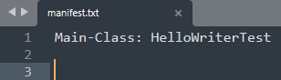
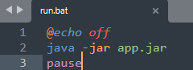

Лабораторна робота 1.0. Методичка по компіляції і запуску
Завдання 1
Розробити консольну програму Hello у вигляді одного класу.
javac -d classes src\HelloWriter.java
java -cp classes HelloWriter
Завдання 2
Розробити консольну програму Hello у вигляді двох класів.
javac -d classes -sourcepath src src\HelloWriterTest.java
java -cp classes HelloWriterTest
Завдання 3
Розробити програму Hello з діалоговим вікном у вигляді двох класів. Спитати у користувача
ім’я та привітати його за ім’ям.
Див. 2 завдання
Завдання 4
Створити виконуваний jar-файл. Створити bat-файл для його запуску і ярлик для запуску
bat-файлу на робочому столі.
Створюємо файл manifest.txt із вмістом Main-Class: HelloWriterTest, і створюємо 2 пустих рядки щоб було так:
Далі виконуємо команди:
javac -d classes -sourcepath src src\HelloWriterTest.java
jar cfmv app.jar manifest.txt -C classes HelloWriterTest.class
classes\HelloWriter.class
Можна запустити:
java -jar app.jar
Тепер, в корні проєкту, створюємо run.bat який буде запускати проєкт:
В провіднику створюємо ярлик цього файлу і переносимо ярлик на робочий стіл. Запускаємо дабл-кліком.
Завдання 5
Розробити консольну програму Hello у вигляді двох класів, розміщених в різних пакетах.
javac -d classes -sourcepath src src\nau\ui\HelloWriterTest.java
java -cp classes nau.ui.HelloWriterTest
Завдання 6
Для консольної програми Hello у вигляді двох класів, розміщених в різних пакетах, створити
jar-файл для класа-сервера. Розташувати його в директорії lib проекту.
- Створюємо в корні проєкту директорію lib.
- Компілюємо файл серверу (HelloWriter.java) в папку classes
- Архівуємо весь пакет з відкомпільованим файлом
- Компілюємо файл клієнта (HelloWriterTest.java) використовуючи вже відкомпільований файл, що знаходиться в архіві (.jar файл)
- Запускаємо повністю відкомпільований проєкт
javac -d classes src\nau\model\HelloWriter.java
jar cfv lib\library.jar -C classes nau
javac -d classes -cp lib\library.jar src\nau\ui\HelloWriterTest.java
java -cp classes nau.ui.HelloWriterTest